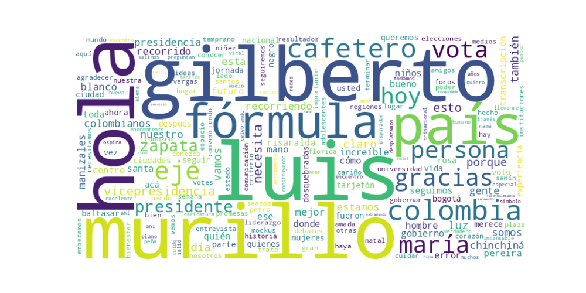

Seguidores: 10,146
1. Perfil de Comunicación: El estilo de comunicación es predominantemente informal y cercano, diseñado para las redes sociales. Utiliza un lenguaje popular y coloquial (ej. "verracas", "sancocho", "buena charla"), con frecuentes menciones a personas, lugares específicos y anécdotas personales para generar identificación. Aunque la candidata vicepresidencial, Luz María Zapata, introduce elementos de argumentación política y datos (como cifras electorales históricas), el tono general busca establecer una conexión emocional y cotidiana con el electorado, más que un discurso técnico o institucional rígido.
2. Temas Principales: 1. Experiencia y Preparación: Es el pilar central. Se enfatiza la trayectoria y capacidad de gestión de la fórmula, especialmente el conocimiento de Zapata sobre la Vicepresidencia. Se critica a quienes "hablan desde la teoría" y se presenta la dupla como la opción de "hechos" y "certezas". * Ejemplo: "Colombia no necesita promesas sobre quién puede gobernar, sino experiencias que lo demuestren". 2. Representación Regional y Territorial: Se posicionan como "la fórmula de los territorios" o "de las regiones". Hay un esfuerzo constante por nombrar municipios y departamentos visitados (Eje Cafetero, Chocó, Risaralda), mostrando un trabajo de base y conexión con Colombia fuera de Bogotá. * Ejemplo: "Construyendo país desde las regiones para el mundo". 3. Inclusión y Unidad: Se promueve un mensaje que trasciende divisiones políticas y raciales. Se habla de "inclusión", "diversidad" y se rechazan las etiquetas de derecha o izquierda, apelando a una identidad colombiana unificada. * Ejemplo: "Esto no es de negros, blancos, mestizos, mulatos, y tampoco trata de derecha, izquierda, centro. Se trata de Colombia". 4. Futuro y Esperanza: Ligado al optimismo, se enmarca la candidatura como un proyecto positivo y esperanzador, a menudo vinculado al bienestar de las nuevas generaciones. * Ejemplo: "Vota superación, vota esperanza, vota futuro".
3. Tono y Sentimiento Dominante: El tono general es propositivo y optimista, con una base sólida de reivindicación. No es abiertamente confrontacional con oponentes específicos, pero sí se confronta narrativamente con la "política tradicional" al oponer "hechos vs. discursos" y "experiencia vs. promesas". Predomina un sentimiento de confianza en la propia preparación y un llamado a la inclusión y al apoyo popular.
4. Palabras Clave de Poder: * #MurilloZapata: Hashtag unificador y eslogan principal. * Experiencia / Preparación: Palabras clave para diferenciarse. * Hechos (vs. Discursos): Oposición binaria para validar su propuesta. * Territorios / Regiones: Para enfatizar su alcance y representatividad. * Futuro / Esperanza: Para conectar emocionalmente. * Inclusión / Diversidad: Para ampliar su base de apoyo. * "No votes en blanco, vota [Negro/Murillo]": Eslogan directo para captar un voto protesta o indeciso.
5. Conclusión Estratégica: La estrategia de comunicación busca construir una narrativa de competencia serena y experiencia validada, alejada del ruido político tradicional. Parece dirigirse a un electorado que valora la gestión por encima de la ideología, a las regiones que se sienten desconectadas del centro, y a quienes están desencantados y contemplan el voto en blanco. A través de un tono cercano y un activismo territorial intenso ("recorrer el país"), busca evocar confianza, proximidad y un optimismo práctico, presentándose no como la opción del establishment, sino como la alternativa capacitada y conectar con la Colombia "real". El mensaje final es claro: ofrecen un liderazgo experimentado y unificador para todos los colombianos.
1. Resumen del Patrón de Éxito: El patrón de éxito se basa en una comunicación de cercanía y demostración de trabajo territorial. Los videos más exitosos no muestran al candidato en un estudio, sino en el espacio público, "pisando tierra" y en contacto directo con la gente. Es una estrategia de proximidad y presencia que convierte la campaña en un testimonio de conexión con las regiones, la calle y la ciudadanía común. La emoción dominante es la esperanza basada en la experiencia y la pertenencia, no la confrontación agresiva.
2. Tácticas de Comunicación Clave: * Capitalización Territorial y Origen: La táctica más recurrente es el anclaje geográfico y personal. Se mencionan constantemente ciudades específicas (Pereira, Dosquebradas, Filandia, La Florida) y se evoca el origen del candidato ("mi ciudad natal", "el lugar en el que crecí"). Esto construye autenticidad y la narrativa de ser "la fórmula de las regiones", contrastándose implícitamente con un poder centralizado y distante. * Contraste por Experiencia vs. Teoría: Se establece un claro diferencial frente a otros candidatos al enfatizar la experiencia ejecutiva probada (especialmente en el rol de la vicepresidencia). Se repite el mensaje: "no hablo desde la teoría", "la vicepresidencia no es un cargo para aprender, es un espacio para ejecutar". Esto ataca directamente a rivales percibidos como más novatos o retóricos. * Apelación a la Unidad y Superación de Etiquetas: Se usa un discurso inclusivo y superador de polarizaciones tradicionales. Frases como "esto no es de negros, blancos... ni de derecha, izquierda, centro. Se trata de Colombia" buscan crear un paraguas identitario amplio, apelando a una ciudadanía cansada de divisiones ideológicas y raciales estériles. * Testimonio de Terceros con Validación: En algunos videos clave, el discurso más potente no lo da el candidato, sino un apoyo ciudadano que lo valida ("usted es el hombre más preparado", "su historia es ejemplar"). Esto otorga una credibilidad orgánica y poderosa, transformando la propaganda en un supuesto "reconocimiento espontáneo".
3. Temas de Mayor Resonancia: * La Representación de las Regiones: El tema central y más resonante es presentarse como la encarnación de la Colombia fuera de Bogotá. * La Experiencia y Preparación para Gobernar: El eje "capacidad probada vs. promesas vacías" genera un fuerte contraste en el electorado que prioriza la gestión sobre la ideología. * La Protección de la Niñez: Un tema concreto y emocionalmente potente, presentado como una "prioridad nacional" transversal. * El Empoderamiento Femenino: La figura vicepresidencial articula claramente el mensaje de "con las mujeres al poder", conectando con ese electorado.
4. Perfil de la Audiencia Implícita: La comunicación apunta a una audiencia regional, pragmática y posiblemente desencantada con la política tradicional. No es una audiencia exclusivamente joven o radicalizada, sino una que valora la autenticidad, el trabajo duro y la competencia. Se habla a indecisos y a votantes de centro que buscan una opción que trascienda las etiquetas de izquierda/derecha y ofrezca un liderazgo sereno y ejecutivo. También se fortalece la conexión con la base leal regional, especialmente en el Eje Cafetero y el Chocó, dándoles un sentido de protagonismo.
5. Conclusión Estratégica: La clave fundamental del poder de su discurso es la construcción de una autoridad basada en la pertenencia y la competencia. Su potencia radica en la fusión de dos narrativas poderosas y usualmente separadas: el "hijo del territorio" (emocional, cercano, auténtico) y el "técnico de alta gerencia" (racional, preparado, ejecutivo). No es un discurso tradicional de ataque o de ideología abstracta; es un discurso de testimonio y curriculum vivido. Lo que lo hace potente es que su credibilidad no se argumenta solo con palabras, sino que se muestra en el contexto de su interacción con la gente y se valida por su trayectoria. Ofrece una promesa de unión no desde la retórica, sino desde la demostración de un origen y una hoja de vida que, según su narrativa, ya ha trascendido las divisiones del país.

Caption: Hoy desde mi ciudad natal, mi amada Pereira, convenciendo a más colombianos y colombianas de que Luis Gilberto Murillo es el presidente que merece y necesita el país. ¡Seguiremos recorriendo más ciudades para que cada vez seamos más respaldando la fórmula #murillozapata! @luisgmurillou @luzmazapata_
Likes: 244 | Comentarios: 2 | Reproducciones: 1,477
Ver en InstagramCaption: Qué mejor manera de terminar esta semana, que recibiendo el cariño de las personas del lugar en el que crecí: La Florida, Risaralda. ¡Gracias a todos quienes nos escucharon y a este equipo que nos acompañó durante todos estos días. Seguiremos recorriendo el país para que en todos los rincones conozcan la fórmula #murillozapata, que es la que Colombia necesita. @luisgmurillou @luzmazapata_
Likes: 317 | Comentarios: 34 | Reproducciones: 2,112
Ver en InstagramCaption: #murillozapata #choco #risaralda @luisgmurillou @luzmazapata_
Likes: 348 | Comentarios: 9 | Reproducciones: 2,942
Ver en Instagram